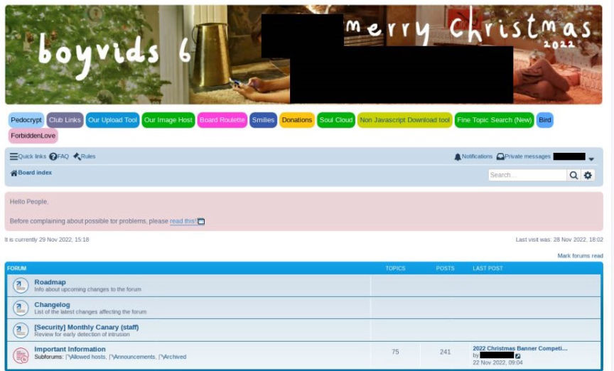
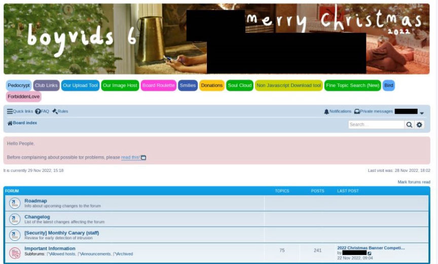

Dark Web Child Abuse Sites Dismantled
An international joint investigation led by the Federal Criminal Police Office (BKA) and Central Office for Combating Internet Crime (ZIT) of the Frankfurt am Main Public Prosecutor's Office took down three Darknet child abuse platforms "BoyVids 6.0", "Forbidden Love" and "Child Porn Market".
According to the BKA, the sites had hundreds of thousands of users from all over the world, that participated in the distribution of images and videos of sexual violence against Children.

The "BoyVids 6.0" platform was established in 2021 and was reportedly used in the distribution of sex abuse material against male children. The site was established as a replacement for the site "Boystown" following its takedown in 2021. At the time of its takedown "BoyVids 6.0" had approximately 410,000 registered users.
The "Forbidden Love" darknet site was established in February 2022. At the time of its shutdown, the site had at least 846,000 registered users who had been participating in the distribution of images and videos of sexual violence against female children.
The third site, "Child Porn Market" reportedly operated under the moniker "CP Market" and had been running since around October 2022. The site was used in the sale of child abuse material. Its shutdown resulted in the recovery of 120 video files of sexual violence against children offered for sale on the site.
In addition to shutting down the platforms, the investigations led to the arrest of four suspects accused of either being admins or users of the sites.
The main suspect, a 21-year-old man from Saxony, accused of having administrative duties on the three sites was arrested on November 29, 2022. His arrest resulted from intensive investigations by the BKA and ZIT. The investigations revealed that the suspect participated in the exchange of child abuse on the "Boystown" platform before its takedown in 2021. The 21-year-old allegedly founded "BoyVids 6.0" to succeed "Boystown".
Authorities in Germany also arrested two more men accused of distributing child abuse material on the platforms. The first man, a 44-year-old from Lower Saxony, was arrested on November 6, 2022. The second, a 45-year-old from Schleswig-Holstein, was arrested on December 13, 2022.
The fourth suspect was arrested in Brazil at the end of November 2022 and is accused of being an admin of the "Forbidden Love" darknet site.
Investigations targeting other suspected operators and users of the platforms are ongoing.
The shutdown of the sites in early December 2022, reportedly resulted in the recovery and removal from circulation of hundreds of thousands of images of sexual violence against children.
In other news, on December 19, 2022, the Dutch National Prosecutors Office (Openbaar Ministerie), sent out warning letters via email to suspected users of the now defunct dark web child abuse site DarkScandals. The warning letters follow the sentencing of the site's admin to 10 years in prison. Michael Rahim Mohammad, 35, known as "Mr Dark" on DarkScandals was sentenced in June 2022.
According to the Public Prosecution Service, the letter was sent to email addresses that had been used on Darkscandals. The letter informed its recipients that possession of child abuse material is punishable by law. The recipients were also asked to get rid of all criminal material in their possession and to seize from engaging in further criminal activity.
According to the BKA, the sites had hundreds of thousands of users from all over the world, that participated in the distribution of images and videos of sexual violence against Children.

A screenshot of the BoyVids 6.0 platform by the BKA
The "BoyVids 6.0" platform was established in 2021 and was reportedly used in the distribution of sex abuse material against male children. The site was established as a replacement for the site "Boystown" following its takedown in 2021. At the time of its takedown "BoyVids 6.0" had approximately 410,000 registered users.
A screenshot of the Forbidden Love platform by the BKA
The "Forbidden Love" darknet site was established in February 2022. At the time of its shutdown, the site had at least 846,000 registered users who had been participating in the distribution of images and videos of sexual violence against female children.
The third site, "Child Porn Market" reportedly operated under the moniker "CP Market" and had been running since around October 2022. The site was used in the sale of child abuse material. Its shutdown resulted in the recovery of 120 video files of sexual violence against children offered for sale on the site.
Four Suspects Arrested
In addition to shutting down the platforms, the investigations led to the arrest of four suspects accused of either being admins or users of the sites.
The main suspect, a 21-year-old man from Saxony, accused of having administrative duties on the three sites was arrested on November 29, 2022. His arrest resulted from intensive investigations by the BKA and ZIT. The investigations revealed that the suspect participated in the exchange of child abuse on the "Boystown" platform before its takedown in 2021. The 21-year-old allegedly founded "BoyVids 6.0" to succeed "Boystown".
Authorities in Germany also arrested two more men accused of distributing child abuse material on the platforms. The first man, a 44-year-old from Lower Saxony, was arrested on November 6, 2022. The second, a 45-year-old from Schleswig-Holstein, was arrested on December 13, 2022.
The fourth suspect was arrested in Brazil at the end of November 2022 and is accused of being an admin of the "Forbidden Love" darknet site.
Investigations targeting other suspected operators and users of the platforms are ongoing.
The shutdown of the sites in early December 2022, reportedly resulted in the recovery and removal from circulation of hundreds of thousands of images of sexual violence against children.
In other news, on December 19, 2022, the Dutch National Prosecutors Office (Openbaar Ministerie), sent out warning letters via email to suspected users of the now defunct dark web child abuse site DarkScandals. The warning letters follow the sentencing of the site's admin to 10 years in prison. Michael Rahim Mohammad, 35, known as "Mr Dark" on DarkScandals was sentenced in June 2022.
According to the Public Prosecution Service, the letter was sent to email addresses that had been used on Darkscandals. The letter informed its recipients that possession of child abuse material is punishable by law. The recipients were also asked to get rid of all criminal material in their possession and to seize from engaging in further criminal activity.